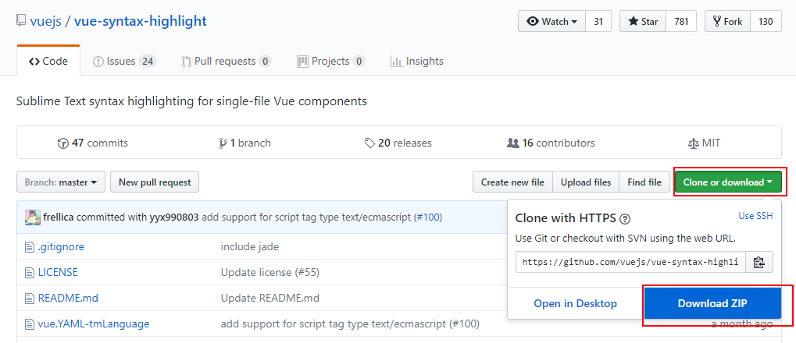

1.1. SublimeText3 前端开发环境构建
1.1.1. 安装插件
安装插件时，先使用Ctrl+Shift+P（Tools→Command Palette...）打开控制面板，输入PackageControl 回车 显示如图：
选择Package Control:Install Package,回车。安装成功后如图所示，在输入框中输入插件名字选择插件回车即可安装插件。
1.1.2. 安装插件html提示插件Emmet
前端开发必备，Write less , show more，使用Tab键触发。安装Emmet后，可以输入少量代码后摁Tab键，系统自动补全代码。
1.1.3. AutoFileName
快速列出你想引用的文件夹里面所有文件的名字，比如想引用test/img/1.png。只需要输入/img,该插件就会自动提示/img下面的所有文件名，如图
1.1.4. BracketHighlighter
高亮显示[], (), {}, “”, ”,
符号，便于查看起始和结束标记。如图：
1.1.5. JsFormat
JsForma可以自动帮助你格式化JavaScript代码，形成一种通用的格式，比如对压缩、空格、换行的js代码进行整理，使得js代码结构清晰，易于观看。在已压缩的JS文件中，右键选择jsFormat或者使用默认快捷键（Ctrl+Alt+F），如果该热键被占用了，可以在Preferences→Key Bindings-User中配置： { "keys": ["ctrl+shift+alt+j"], "command": "js_format","context": [{"key": "selector", "operator": "equal", "operand": "source.js,source.json"}]},
1.1.6. CSS Format
CSS Format可以将任意的 CSS、SASS、SCSS、LESS 代码格式化为展开、紧凑、压缩的形式，选中需要格式化的样式代码，右键选中CSS Format，选择需要形成的格式即可。
1.1.7. DocBlockr
安装该插件后，可以快速生成各种注释格式，当需要生成注释符号时，输入/*、/然后回车系统即帮你自动生成，如果/后面刚好是一个函数的定义，注释格式会根据函数的参数生成。
1.1.8. Tag
Tag插件提供各种对Tag标签的操作，具有功能：根据/自动关闭HTML标签，标签自动缩进（或选中ctrl+alt+f），删除标签和里面的内容，插入标签（对光标字符“ctrl+shift+,”生成标签），删除标签里的属性，关闭标签，检查标签等。有些功能是自动执行，有些功能需要手动执行，功能入口 菜单栏Edit→ Tag
1.1.9. HTML-CSS-JS Prettify
格式化HTML,CSS,Javascript和Json代码格式。使用该插件，需要安装nodejs，而且要在Packages-Setting→ HTML/CSS/JS Prettify→ set node path中设置你node的安装路径。使用过程：Tools→ Command Palette(或者Ctrl+Shift+P)，输入选择htmlprettify即可完成整个文档的格式化。也可以设置快捷键：Packages-Setting→HTML/CSS/JS Prettify→set keyboard shortcuts，因为我的ctrl+shift+h已经被占用，所以我改成ctrl+shift+alt+h
1.1.10. Terminal
打开文件的终端，终端默认是CMD。ctrl+shift+t 打开文件所在文件夹，ctrl+shift+alt+t 打开文件所在项目的根目录文件夹，可以自己重新配置快捷键。也可以右键open terminal here打开。
1.1.11. sublimeCodeIntel
js智能提示
1.1.12. vue-syntax-highlight
vue格式高亮的插件vue-syntax-highlight
下载插件

把插件放到sublime中
菜单 设置 --> 浏览资源包
打开了此文件夹
新建文件夹Vue
将下载的插件解压，复制解压后文件中所有内容至Vue文件下
中导入vue-syntax-highlight插件
快捷键“Ctrl+Shift+p”，调出命令板，输入Vue，选中第一个就导入成功了
让sublime Text3支持Vue格式化
安装 HTML-CSS-JS Prettify 插件，安装方法如下
快捷键“Ctrl+Shift+p”，调出命令板，输入HTML-CSS-JS Prettify，出来后，回车安装成功。
输入下面代码
{
"global_file_rules":
{
// Be sure to include the `html` key in your user settings to be able
// to prettify html files.
"html":
{
"allowed_file_extensions": ["htm", "html", "xhtml", "shtml", "xml", "svg","vue"],
"allowed_file_syntaxes": ["html", "xml"],
"disallowed_file_patterns": []
},
},
}
下图是默认设置和用户设置，左边是默认，右边是用户设置
打开vue格式的文件，快捷键Ctrl+Shift+H
还有很多插件需要根据你使用的库和框架自己去添加，比如jQuery、angular、node.js、less等，只要Ctr+Shift+p输入关键词即可找到你想安装的插件